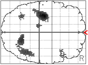
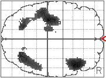

M. Brett, I.H. Jenkins, J.F. Stein and D.J. Brooks
MRC Cyclotron unit, London, UK
The roles of the premotor areas in the selection of action are still controversial. One influential theory is that of Passingham . He proposed that the lateral premotor cortex (LPMC) has a specific role in ‘externally generated’ movement, whereas the supplementary motor area (SMA) is more involved in action that is ‘internally generated’. Action generation is external if the choice of action is conditional on some external sensory cue, and internal if the choice of action is not dictated by an external stimulus. An early PET study of paced joystick movements gave only qualified support . It found that LPMC did not activate specifically when the direction of movement was conditional on a colour cue, but SMA was more activated than other premotor areas during random movements. This result was confounded by the fact that subjects could prepare responses in the random condition. We therefore designed a PET study that is not confounded by motor preparation in order to test Passingham’s hypothesis.
Subjects and methods
Our subjects were 8 normal right handed volunteers aged 35-58 (6 male, 2 female). We trained the subjects for 45 minutes on two tasks. In the random [R] task they heard one of four musical tones; each of these tones cued them to press at random one of the four buttons under the fingers of their right hand. Tones were spaced at random between 4 - 6 seconds apart. In the conditional [C] task they heard one of four further tones. Each tone was associated with one of the four buttons, and they had to press the correct button. After 45 minutes, they began 45 more minutes of trials where the R and C sounds were intermixed randomly so they could not predict which they would hear next. During the scanning session they continued to practice on such a mixture of tones. As each scan began, the mixture changed to specific proportions of R and C, and reverted to an equal mixture after 45 seconds. Each subject had 12 scans: 2 rest (tones but no response); 2 in which there were all R tones during the first 45 seconds; 2 with all C tones, and 6 with varying mixtures of R and C. None of the subjects were aware that the mixtures had been changed during the scans. We used the bolus injection technique with O15 labelled H20 in a CTI 953B PET scanner. Scans were realigned, normalised and smoothed using standard settings in the SPM 95 software package.
Results
Fig 1

Fig2

Figures 1 and 2: transverse SPMs of activated voxels, uncorrected threshold of p<0.001; Left = posterior
The figures are from SPM 95, and show voxels with significant activation compared to rest in the All R (fig. 1), and All C (fig. 2) conditions. Areas activated are left motor and sensory cortices, bilateral parietal cortices, left thalamus and a right ventral premotor / prefrontal area. The two conditions show a very similar pattern of activation. In neither comparison was there activation of SMA at any threshold. Comparison of All-R and All-C showed greater activation in the right premotor / prefrontal area for the All-R condition.
Conclusions
Our study was intended to test the hypothesis that the SMA has a specific role in internal action selection. We believe our design has removed the effect of motor preparation that confounded previous studies; subjects could not prepare how to respond or when to respond. Our results show no evidence for a specific role of the SMA in either mode of movement selection. Previous findings of SMA activation during random movement may be explained by the increased motor preparation such tasks allow. Once this confound has been removed, the distinction between internal and external action selection may not be of fundamental importance in explaining PET activation.